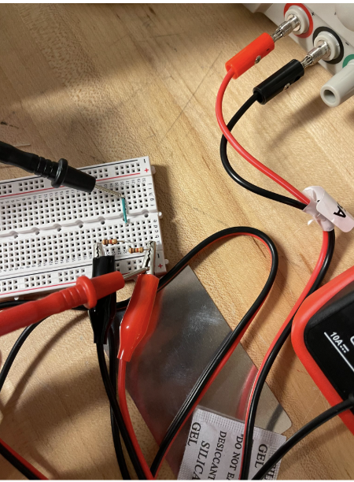
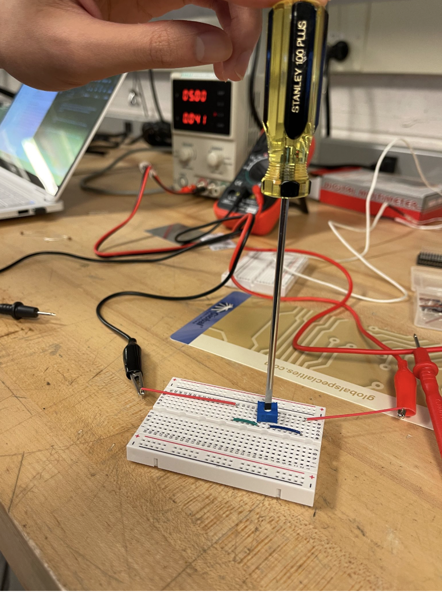

My first few days in ESAP robotics were focused on getting comfortable with the electronics layer that makes robot sensing possible. Instead of starting with a finished mechanism, I spent time on the bench with a power supply, breadboards, resistors, alligator clips, and a multimeter, building small circuits and checking that the voltages matched what I expected.
The main exercise was setting up voltage dividers. I wired resistor networks on a breadboard, supplied them with a known input voltage, and measured the output node with the multimeter. Seeing the measured value settle near the calculated divided voltage made the relationship between the schematic and the physical circuit much clearer.
After that, I worked with potentiometer systems. A potentiometer is basically an adjustable voltage divider, so turning the shaft changes the output voltage. That makes it useful for robotics because it can represent position, rotation, or calibration settings as a voltage that a controller can read.


This was a useful starting point because the work was simple enough to debug carefully, but still connected directly to robotics. Before a sensor value shows up in code, the wiring has to be stable, the reference voltage has to make sense, and the signal has to be measured correctly. These first circuits helped me practice that process from the hardware side.